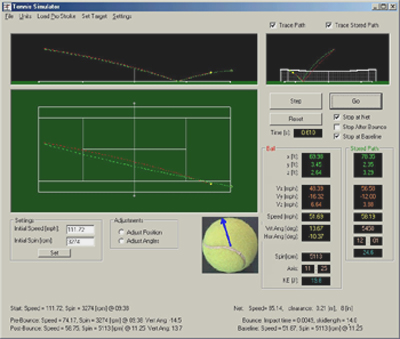
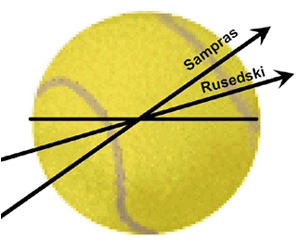

Speed and Spin
The inverse relationship between ball speed and spin, and how pros manipulate both to create unreturnable shots.
Speed and Spin
By John Yandell
In the past articles in this section, I've reported on the ground-breaking studies on ball speed and spin in the pro game conducted by Advanced Tennis. Now let's take it a step further and see how the two interact in the serves of two of the biggest servers in the history of the modern game: Pete Sampras and Greg Rusedski. Let's compare their combinations of speed and spin, both at the upper reaches of the modern game. But then let's take it a step further and look at the role the type of spin plays. This turns out to be critical in developing an understanding of the so-called "heavy ball."
For both Sampras and Rusedski, Advanced Tennis was fortunate to be able to measure over a dozen first serves, including serves directed to all 4 corners of the service boxes. This gave us a picture of the range of possibilities and speed spin combinations for both players.
How do speed and spin combine in a world class serve?
The results of the study show that Pete and Greg produced balls that were virtually identical in terms of the speed and the total amount of initial spin. Despite these similarities, however, there was a significant difference in the quality of the ball they produced. The study showed that this "heavy ball" factor could actually be quantified and measured. The fact is that Pete Sampras produced a ball that was significantly "heavier" at the critical moment of the attempted return. We found that this resulted from the topspin component in his delivery. But topspin in a very special combination with sidespin and high velocity.
Topspin: part of a special combination of speed and spin.
Probably everyone who has pondered the mystery of the heavy ball has concluded that it is SOME combination of speed and spin. I've heard it argued that a heavy ball is actually a high velocity laser that clears the net by inches and penetrates the court with speed but little spin. And I've heard it argued that a heavy ball is a screaming western forehand that bounds over your shoulder with ultra topspin. If you go on the various tennis message boards on the web, you can read these kinds of views, and everything else in between. Everyone thinks they know what the heavy ball is when they see it or hit against it, they just don't have any actual facts to support their opinions.

The Advanced Tennis shot simulator, developed by physicist Nasif Iskander.
This diversity of opinion stems in part from the lack of hard information. The Advanced Tennis study of Pete Sampras and Greg Rusedski gives us a place to start. So far as I am aware, this is the first study to measure spin and speed in professional tennis at the same time, and to recreate the actual trajectories of the serves. This is what allows us to compare the interactions of speed and spin, how they affect the flight of the ball, and what that means at the moment of the return.
The analysis programs to delve into these mysteries was developed by Advanced Tennis scientist Nasif Iskander. We started with the same filming protocol Nasif had previously devised to film the speed of the ball. (Click Here.) But this time we combined it with one of our high speed cameras focused on the spin of the ball. Nasif then developed software that allowed us not only measure the amount of spin on the ball, but the axis on which the ball was spinning.
This allowed us to measure the relative amount of topspin and sidespin. This turned out to be critical in understanding what could make one high velocity serve "heavier" than another. Nasif then fed the data into a software simulator that allowed us to observe how the amount and type of spin affected the ball trajectories and the quality of the ball at the time of the return.
The first high speed look inside "spin" serves.
The first result was a new definition of what a "spin" serve actually is. Almost universally, players and coaches talk about hitting a "slice" serve or a "topspin" serve. What our study showed is that this is a misleading way to think about spin. The analysis of the high speed video v reveals that there is no such thing as a pure "slice" or a pure "topspin" serve. Those are at best relative terms. Virtually every serve we examined was some combination of topspin and slice. Spin on the serve isn't "either/or," it's a matter of degree.
Even more interesting was what the video showed about the relative amounts of topspin and sidespin in the deliveries of these two great servers. In every case, the majority of the spin was actually sidespin. Topspin was the minority component. This insight has valuable teaching implications as we shall see in the next article. Topspin was the minor component in terms of the total amount of spin on the serve, but it also turned out to have a critical effect on what happened to the ball after it bounced and at the time of the return. So let's try to understand all the components we studied and how they go together to create weight on the serve.
Different spins and speeds mean different "weights."
Ball Speed
Let's start by looking at velocity. Interestingly, the two players averaged virtually the same initial ball speed. This is the speed off the racket, the same speed as recorded by the radar gun at pro events. In the events in our study, Sampras's serve averaged 117mph. Rusedski averaged 118mph, virtually identical. The speed range for the two players was also the same. This ranged from around 100mph to around 130mph.
We saw in the study of ball speed that most shots in professional tennis lose about half their speed as they travel from one player to the other, and this was the same for Sampras and Rusedski. For either player a serve that started out around 120mph slowed down to a little over 80mph before the bounce. The bounce slowed the ball down to 65mph. The ball continued to slow after the bounce to about 55mph at the time of the return. We could see no discernable difference in this pattern between the two players in the 30 plus events we studied.
Ball Speed: Sampras and Rusedski
Player:
Initial MPH
Pre Bounce
Post Bounce
Return/Baseline
%Speed Retained
Time Interval
Pete Sampras
117
82
66
54
46%
.66/sec
Greg Rusedski
118
83
67
55
47%
.64/sec
By the way, it's a very good thing the serve in pro tennis loses half its initial velocity. Even with the loss of speed, it still takes the ball only 2/3s of a second or less for the ball to reach the receiver. If the ball didn't slow down, the return of serve in the pro game would be humanly impossible.
Ball Spin
If speed were the only determinate, we would have to conclude that Sampras and Rusedski hit equally heavy balls. But what did the high speed cameras say about the spin on these two players serves?
When we compared the spin measurements off the racket, we were in for another surprise. The total amount of initial spin on the ball was also virtually identical. Both Pete and Greg averaged about 2500rpm of spin on their first serves. Like the speed ranges, the spin ranges were also very similar. The initial spin could be anywhere from about 1200rpm to 4000rpm, depending on where and how they choose to deliver the ball. But again, over more than a dozen serves for both players, the average initial spin rate was the same.
Player:
# of Serves
Av MPH
Range RPM
Av RPM
Pete Sampras
18
117
1306-3916
2492
Greg Rusedski
14
118
1222-4025
2549
When we looked at velocity we saw that the speed of the serve decreases by half or more between the players. Was it the same for the spin? Surprisingly the answer was no. In fact the answer was the opposite. Speed decreased by half. But in the same interval spin actually doubles.
That's correct the spin doubles! It actually increases over the flight of the ball. How is that possible? There are two things to consider. First, spin isn't affected as the ball travels through the air the same way as speed. Second, the friction of the bounce increases the amount of spin before the return. At the moment the ball hits the court, the friction reduces the speed, but at the same time, it actually generates great additional spin.
How? The court "grabs" the bottom of the ball. But the top of the ball continues to rotate. The net effect is the loss of speed, but the creation of spin. You can see this yourself if you set a ball machine to throw a flat ball with no spin. As the ball travels towards you, you can actually see the seams of the ball. Now watch it after the bounce. The ball will come off the court with topspin. Suddenly you can't see the seams. All you see is the blur of the spin, typically about 1500rpm on a medium paced ball.
The bounce automatically generates topspin in a "flat" ball.
When we did our first study of ball spin at the U.S. Open in 1997, this was one of the many surprising things the video revealed. The bounce on the court could more the double the spin on the ball, adding 2000rpm or more. The other interesting fact was that after the bounce, the ball tended to be spinning with pure topspin. The interaction with the court wiped the sidespin component off virtually every shot. The effect of the friction of the court on the bottom of the ball was so powerful that it caused the ball to leave the bounce spinning virtually completely upright, from top to bottom.
Serve Spin After the Bounce
So what does all this mean for a Sampras or Rusedski serve with an initial ball spin of 2500rpm? It means that after the bounce their first serves are gaining 2000rpm and more, spinning as fast as 5000rpm or even higher at the time of the return.
Try visualizing what 2500rpm really means.
Try visualizing how much energy this really is. We know it takes about 2/3s of a second for the ball to travel from the server's racket to the returner's racket. At 2500rpm, that means the ball rotates or turns over about 30 times. In reality, the number is acutally higher because we need to account for the increase in the spin after the bounce. Probably the total is something like 50 complete revolutions between the server and the returner.
No try to imagine a tennis ball traveling the length of the court in 2/3s of a second and, at the same time, making 50 revolutions! After the bounce the ball is actually spinning at over 80 revolutions per second, more than twice the initial spin off the racket! It's tough to even create the mental image - much less imagine what it must be like to see that ball coming at you, or what it might feel like when it hit your racket. (More on this below.)
The Difference
So was the spin after the bounce the same for Sampras and Rusedski? Surprisingly the answer was no! Every other factor was essentially identical. The same initial ball speed off the racket. The same initial ball spin. The same speed loss at the time of the return. The big difference was the amount of spin after the bounce. Both players' serves picked up spin from the bounce off the court. Rusedski gained over 2100rpm after the bounce. But Pete gained 2510rpm.
What caused Greg's serve to gain less spin at the bounce?
Rusedski went from about 2500rpm off the racket to about 4700rpm after the bounce. Sampras went from 2500rpm to almost 5300rpm. That's 700 more rpm after the bounce. So Sampras picked up about a third more spin.
How could that be possible? The answer lies in understanding the type of spin, not the amount. Here was the difference between the players. The total rotation off the racket was the same, but the component's of the spin were not. Rusedski's serve had a much higher sidespin component. Sampras's serve on the other hand had much more topspin.
Players and coaches often use simplistic descriptions when it comes to the type of spin on the serve. You still hear the terms "slice serve" and "topspin serve" used as if these were somehow completely different animals. The Advanced Tennis spin studies confirm that this distinction is artificial. It doesn't describe what goes on in pro tennis. Virtually all serves are some combination of the topspin and slice.
The topspin component: smaller but critical.
But what combination? Interestingly, the largest component by is sidespin or slice. This is mixed with a smaller topspin component. This insight has important teaching implications for the serve, as we will see in our next article. The topspin component may be the minority component, but the relative amount of topspin turns out to be the key to understanding the difference in the serves of Sampras and Rusedski, and also, the differences we discovered in the spin after the bounce.
Using Nasif's software we were able to break down the spin on their serves into its sidespin and topspin components as the ball left the racket. For Rusedski, the initial slice or sidespin component was roughly 80%. This meant Rusedski's topspin component was 20%. For Sampras the sidespin component was 65%. That meant his topspin component was much higher at 35%. It was still the smaller component, but it was approaching twice the topspin component of Rusedski.
We could see this clearly in the axis of spin for both players. The diagram turns Rusedski around as if he were a righthander, so we can compare the two players. If we think of the ball as the face of the clock, we can see Rusedski's ball is spinning from about 8:30 to 2:30. This is much closer to sidespin than topspin, but it also reflects the 20% topspin component measured in the high speed video.

The axis of spin reveals the balance of sidespin and topspin.
Sampras's ball on the other hand is spinning on a steeper axis, something more like 8 to 2 on the face of the clock. This is much more topspin than Rusedski. But surprisingly perhaps, it is still well less than half of the total spin. The point is that the relative amount of topspin when the ball is spinning on this 8 to 2 axis is apparently sufficient to wreak havoc in the pro game.
We'll look at what all this may mean for teaching in the next article. We'll also trace the spin levels to the actual motions racket paths for both players. But if you are interested in how Sampras produces this unique ball, in the meantime I can suggest checking out my series on his motion in Tour Strokes. (Click Here.)
Understanding this unique speed spin balance takes us a long way to understanding the effectiveness of Pete Sampras's serve over his long and glorious career. Yes, Pete got his share of aces. But anyone who watched his matches had to marvel at the number of returns that just didn't come back. Or the returns that resulted in easy volleys or short forehands for Pete. As we saw in the previous articles, many players served as fast or faster. Many also served with less speed, but as much spin. What this study showed was Pete's magic combinations did seem to produce something approaching the mythical "heavy ball".
So many unreturnable serves over a glorious career.
That is what made the Rusedski comparison so interesting. Of all the top players we studied, Rusedski was the only one who appeared to have the same high velocity and heavy spin as Sampras. But this didn't turn out to be exactly the case.
At the time of the return we found a clear difference in the quality ball the opponent was forced to return. This finding meshes with what the players themselves believed about Pete's serve. John McEnroe told me that when he coached Pete in Davis Cup, sitting on the sidelines he could hear the difference in the way the ball came off Pete's racket.
Another friend of mine, also a former tour player, had the pleasure of trying to return the serves of both players. He described the difference this way: "They both had incredible serves and definitely could get a lot of balls by you. But when you did get your racket on one of Greg's serves it felt like a tennis ball. With Pete, the collision felt like you were trying to hit a softball. You just couldn't do enough with your own racket to counteract it. The weight of the shot seemed to make hitting a normal return impossible."
Note the height of the contact point when pros returned Pete's serve.
I believe that the initial velocity of his serve combined with incredible levels of spin after the bounce are the key to this phenomenon. The spin not only made the ball feel much heavier, it also tended to produce a higher bounce. Our re-creation of the trajectories showed that Sampras's ball could reach a height of well over 5 feet at the top of the bounce. If you are six feet tall that puts the ball at or slightly above shoulder height. Rusedski's ball bounced up as well, averaging over 4 feet at the time of the return. But on average, Pete's serve was 4 to 6 inches higher.
This extra height was also the result of that same topspin component. Why does topspin produce this effect? The explanation lies in the physics of the bounce of the ball, and goes beyond the scope of this article. Briefly, however, it involves two factors. First topspin causes the ball to drop more sharply downward, rebound off the court at a steeper angle, and therefore bounce higher. Second, a ball with a higher topspin component is apparently more efficient in moving through the bounce.
Remember the friction of the bounce creates topspin. What the Sampras data showed was that a ball that comes into the bounce with more topspin will leave the bounce with more topspin than a ball spinning at the same rate but with a higher sidespin component.
What are the differences in the motions --and the teaching implications?
Teaching Implications
The Advanced study showed conclusively that many of the traditional coaching ideas regarding spin serves are not based on reality. We will explore them in the next article. But it is important to note that the role of topspin is just one factor in a great serve. Heavy topspin in and off itself doesn't make a serve effective, or even heavy. We saw that Sampras combined heavy spin with certain velocity levels. Less speed and more spin wouldn't have produced the same result.
Certainly, in women's tennis we see less topspin, and as we'll examine, that may have to do with the issue of speed spin balance. It's going to be the same issue for players at all levels. Speed and spin are trade-offs. What's the right balance for you? So before you start throwing the ball behind your head to try to generate 2500rpms with a heavy topspin component, (and maybe trashing your rotator cuff) you may want to consider all the factors and implications in the next article.

John Yandell is widely acknowledged as one of the leading videographers and students of the modern game of professional tennis. His high speed filming for Advanced Tennis and Tennisplayer have provided new visual resources that have changed the way the game is studied and understood by both players and coaches. He has done personal video analysis for hundreds of high level competitive players, including Justine Henin-Hardenne, Taylor Dent and John McEnroe, among others.
In addition to his role as Editor of Tennisplayer he is the author of the critically acclaimed book Visual Tennis. The John Yandell Tennis School is located in San Francisco, California.
Source: tennisplayer.net archive — Speed and Spin.docx (John Yandell teaching library, 2002-2022). Extracted and rendered as HTML for Tennis Future Lab.